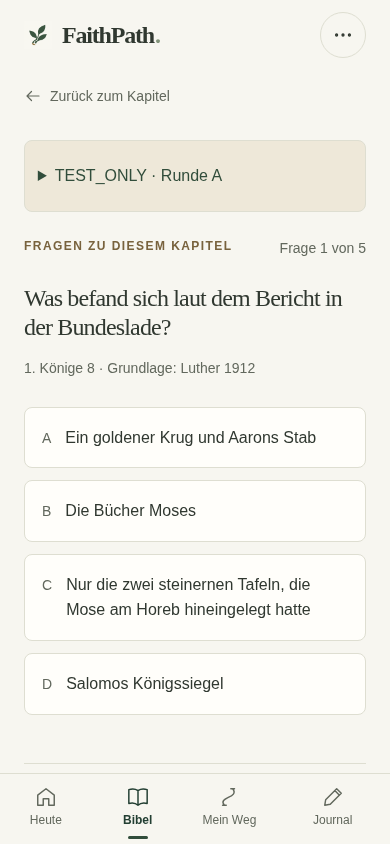
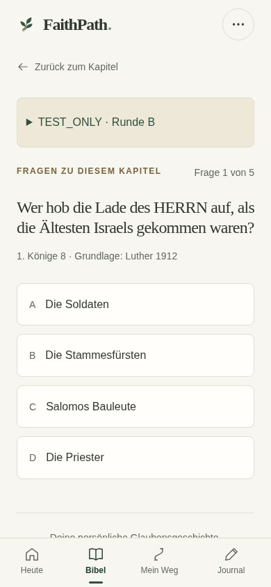
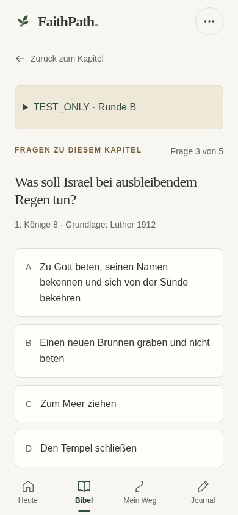
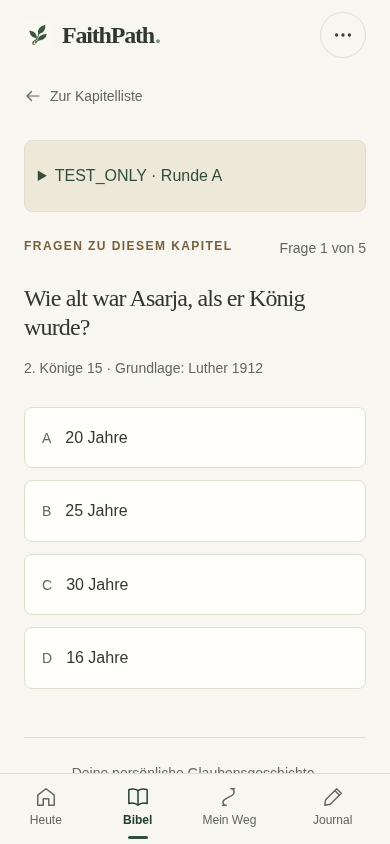
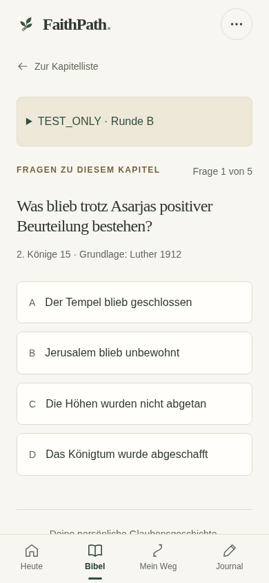
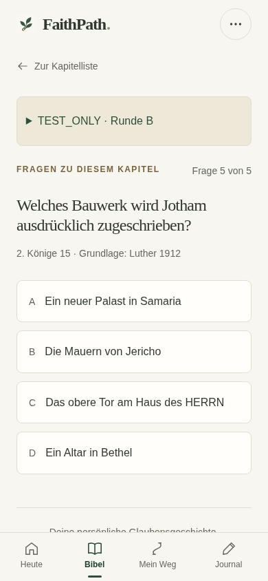

TEST_ONLY · 10.11.2026 · Chromium/Linux. 1KI8 und2KI15, A+B. Keine Produktionsfreigabe und keine physische iPhone-Abnahme.
Prüfbericht · Vollständige Dateiliste · Quellenzuordnung und Testergebnis





